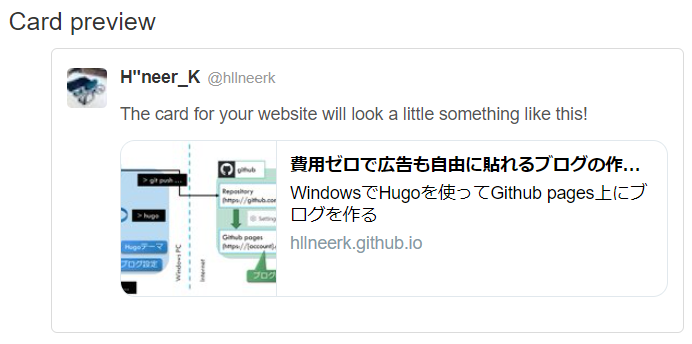

hugoでサムネ画像をtwitter cardに反映

hugoのtheme: mainroadはtwitter card自体には対応しているけど、画像は反映されないので、反映されるように改造する
記事のサムネ画像を設定
画像をstatic/に画像(ここではtest.png)を置く
static/test.png
記事（～.md）のfront-matter（冒頭部分）にサムネイル情報を追記
---
thumbnail: "test.png"
---
twitter cardの画像をサムネ画像に設定
themes/mainroad/layouts/_default/baseof.htmlをエディタで開いて、headの中に以下のメタタグを追記
<meta name="og:image" content="{{ .Site.BaseURL }}{{ .Params.thumbnail }}" />
ビルドして反映
> hugo
反映されているか確認
docs/post/[記事名]/index.htmlに以下が反映されていればok
<meta name="og:image" content="[サイトのurl]/test.png" />
github pagesと同期
git add -A
git commit -am "add twitter-card image"
git push remote
